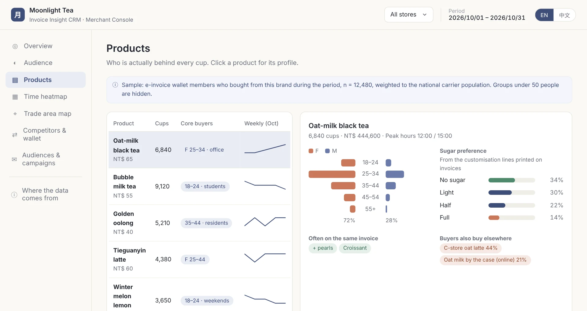
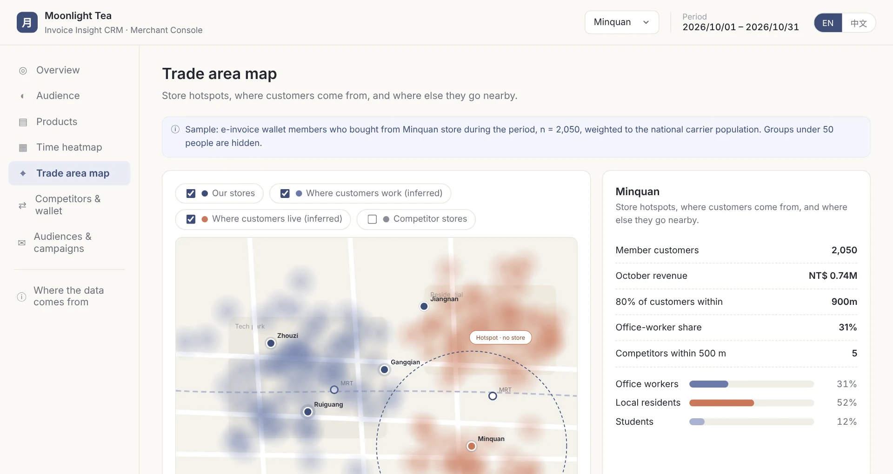

B2B DATA PRODUCT · 0→1 · 2026 REBUILD
Seeing real customers through their receipts.
A cloud CRM for merchants built on e-invoice data: who their customers are, when they come, where they come from — and where they go when they don’t.
Product Manager · B2B data product0→1 planning · 2026 rebuild · Interactive prototype
BACKGROUND
What a POS can’t see.
Every invoice records the merchant, date, items, quantities and amounts, and the e-invoice wallet app also holds member profiles. Put together, they show merchants things that are hard to see from an in-store POS alone. A POS records that someone bought a milk tea and how much they paid, but not necessarily where that customer usually goes, what they often buy, or how they spend at other shops.
So once all the invoice and member data was brought together, we organised it into a cloud CRM merchants could use every day — so they know not only what their store sold, but also more about their customers’ habits.
MERCHANT NEEDS
What do merchants want to know?
Talking to merchants, I found the questions they cared about fell roughly into four groups:
2. When do they come, and what do they buy?
3. Where do they come from?
Which areas does this store’s trade area roughly cover?
4. When they don’t come here, where do they spend?
With their own member data, merchants can partly answer the first three. But knowing which other shops their customers also visit needs cross-merchant invoice data — which is what I think makes this product different.
FROM ONE INVOICE
What can one invoice lead to?
| Invoice data | What it can be analysed into |
|---|---|
| Item name, quantity, unit price | Which segments buy this item; which products are bought together |
| Issue time | How spending spreads across times of the week |
| Seller tax ID and registered address | Store hotspots and trade-area coverage |
| One person’s spending across places and times | Inferred workplace, home and life circle |
| One person’s spending across brands | Competitor switching and category spend distribution |
| Member gender and age | A basic customer profile, to understand how different segments spend |
PRODUCT DESIGN
Six modules in the merchant console.
Audience profile
Gender and age, plus life-circle segments inferred from where and when people spend — such as office workers, local residents or students.
Product insights
Pick an item to see who buys it, when they usually buy, their sugar-level preference, and what they often buy at other merchants.

Time heatmap
The heatmap switches by segment. In the same store, office workers may cluster at weekday lunch while residents come more in the evening or at weekends. Looking only at the store average can hide these differences, and promotions may not suit every segment.
Trade area map
The map shows store hotspots alongside where customers work and live. Merchants can see where their current customers come from, and may spot areas with plenty of customers but no store yet.

Competitors & spend distribution
See how much of customers’ spending in a category happens at your brand and how much at others — so merchants understand where customers may go when they don’t come in.
Audiences & campaigns
Merchants select an audience with the conditions above, then send coupons through the e-invoice wallet app. Beyond coupons sent and clicks, results can be checked by whether that customer later has an invoice from the brand — confirming they really came in and bought.
THE HARD PART
The hardest part is getting the data in order first.
When I rebuilt the prototype, I exported two months of my own invoices and ran straight back into the data problems I hit when building the product.
Item names have no standard format.
The same oat latte is 「冰燕麥拿鐵(中)」 at one shop and 「大-冰燕麥拿鐵」 at another. Tea shops may also pack size, sugar level or toppings into the item name. Before analysing products, you need a product dictionary that maps different spellings to the same item.
One drink can be several lines.
Sugar and ice may be recorded as a separate NT$0 item, such as 「微糖/微冰/」 (less sugar, less ice), and a topping as another NT$10 line. These need merging back into the main product to analyse it correctly. Once cleaned up, sugar levels and toppings become preference data too.
An invoice address isn’t always where the purchase happened.
Invoices from e-commerce, delivery platforms or app subscriptions may carry a head-office address. Use them directly to infer life circles and you can misjudge where a customer actually spends time.
Delivery invoices may not show the restaurant.
On some invoices the seller is the delivery platform, not the restaurant itself.
Discounts and voided invoices need handling too.
Discounts may appear as negative lines, and voided invoices must be removed; otherwise revenue and spend are miscalculated.
PRIVACY
Privacy belongs in the product design.
Merchants see aggregated data, never individual purchase records. When fewer than 50 people match a filter, results are hidden, and an audience that’s too small can’t be created — so no one can work back from a small group to a specific person.
E-invoice wallet members also don’t necessarily represent all consumers, and may skew younger. So I think the interface needs to show the sample size and weighting, so merchants know which data each analysis is based on.
ABOUT THE PROTOTYPE
A rebuild with a fictional brand.
The original system no longer exists; this is a version I rebuilt with Claude. Moonlight Tea is a fictional brand and the numbers are illustrative. Only the item spellings on the “Where the data comes from” page are taken from real invoice details.